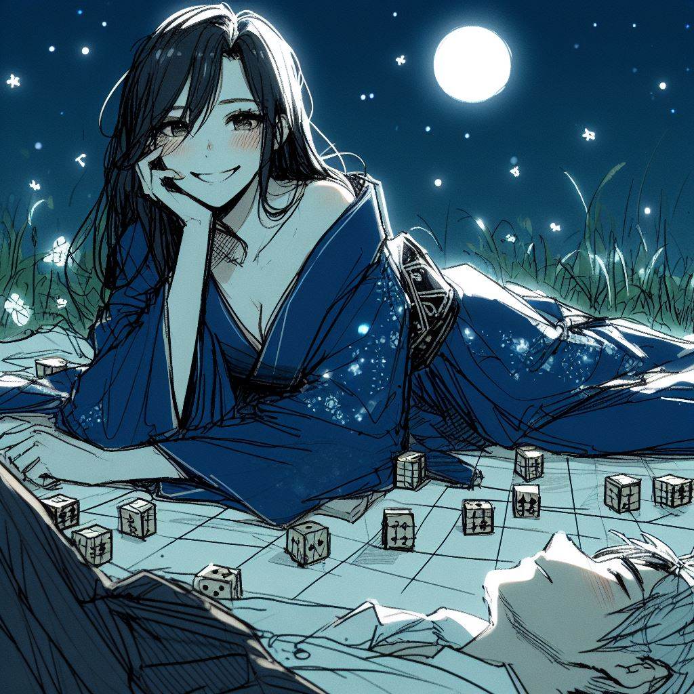

都市伝説
日本の関西地方では、満月が空高く輝く頃、妖艶な魅力を持つ妖怪が現れ、道に迷った者を呼び寄せようとしていると言われている。
美しくミステリアスな駒妖は、その抗いがたい魅力でしがない男たちを誘惑する。 そして彼女は、日本の伝統的な将棋の変形である「王棋」を提案する。 彼女の誘いに乗った者たちは、やがてエキサイティングな遊びの渦に巻き込まれていく。

しかし、ゲームが進むにつれて、彼らは奇妙な疲労を感じ始め、それは次第に骨の髄までしみ込んでいき、ついには逃れられない眠りにつかざるを得なくなる。
駒妖が本性を現すのは、この深い眠りのときである。 彼女は彼らの生命エネルギーを吸収し、かつての生命力の抜け殻を残すだけである。 幽霊と化した不幸な犠牲者たちの魂は、果てしない旅を強いられる。 駒妖にもう一度会いたいという強い欲望と、王棋をやり遂げたいという満たされない願望との後悔の中で永遠にさまよい続けるのだ。